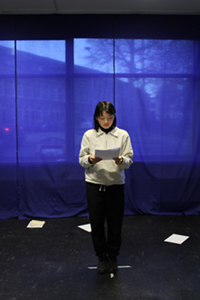
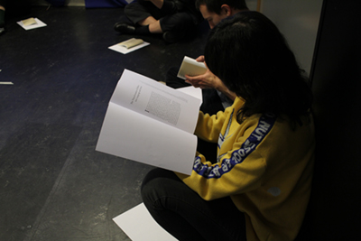

This month’s reading:1
“The Transformation of Silence2 into Language and Action” from “Your Silence Will Not Protect You” by Audre Lorde.
Additional texts in the reader: “Silence, Feminism, Power. Reflections at the Edges of Sound.” by Sheena Malhotra, Aimee Carrillo Rowe (Ed.), “Can the Subaltern Speak?” by Gayatri Chakravorty Spivak, “Word and Silence” from “Listening and Voice: Phenomenologies of Sound” by Don Ihde.
- reading collectively in the Meeting Room.
- In silence and aloud.
This month, we followed the Sonic Meditation “Teach yourself to fly” until the sound of the sirens went off.
Sonic Meditation meetings are inspired by Pauline Oliveros, who introduced them as non-verbal group work, as a way of attuning yourself to others, through one's own voice as well as exercising to listen to each other without the pressure of daily speech, often being marked by gendered parameters.
TEACH YOURSELF TO FLY
WE SIT IN A CIRCLE FACING THE CENTER. THE SPACE IS ILLUMINATED WITH DIM BLUE LIGHT. BEGIN BY SIMPLY OBSERVING YOUR OWN BREATHING. ALWAYS BE ON OBSERVER. GRADUALLY ALLOW YOUR BREATHING TO BECOME AUDIBLE. THEN GRADUALLY INTRODUCE YOUR VOICE, ALLOW YOUR VOCAL CORDS TO VIBRATE IN ANY MODE WHICH OCCURS NATURALLY. ALLOW THE INTENSITY TO INCREASE VERY SLOWLY. CONTINUE AS LONG AS POSSIBLE NATURALLY, AND UNTIL ALL OTHERS ORE QUIET, ALWAYS OBSERVING YOUR OWN BREATH CYCLE.
Besides our voices, this inaugural audio essay to the project "An Phantom Voices" echoes some of our references, interweaving them into each other:
Pamela Z (Breathing), Samuel Beckett (Not I), Anthony Whiteread (Pressures of the Unspeakable, with the Institute for Screamscape Studies), Kathy Acker in an interview, Cathy Berberian (Stripsody), Kamala Sankaram (Ololyga), Meredith Monk (Tablet/Songs from a Hill), Susan Howe (Frolic Architecture), Pauline Oliveros in an interview and (Ghostdance). Alvin Lucier (I am Sitting in a Room), Friedrich Jürgenson (From The Studio For Audioscopic Research), Frank Sumption (Ghost Box #13 - Random Sweep), Mark Bain (The Live Room), Jacob Kirkegaard (Aion, Church), Radio Ragazza (Born in Flames), Fred Moten (On “Figuring it out”).
Straw Phonation and Collective Gargle, exercises led by the WTFPC, followed by a Silent Lunch. This month’s WTFPC supper, along with other WTFPC activities, can be tracked here.